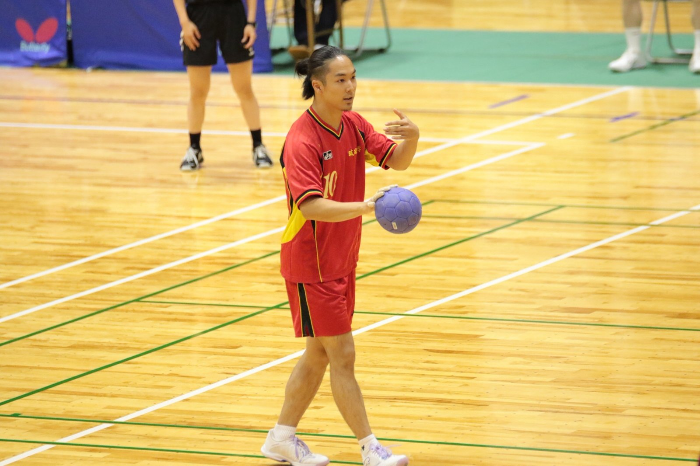

01 / Web Application / Handball
RYUDAIHandTrack
ハンドボールの試合や練習のデータを記録・分析するために開発したWebアプリです。
シュート決定率やゴールキーパーのセーブ率などを可視化し、現在は琉球大学ハンドボール部で実際に使用しています。
琉球大学工学部で電子情報通信を学んでいます。
学業の傍ら、305LABではAIに関する講座の運営支援やシステム開発などに携わっています。また、大学のハンドボール部にも所属しています。
さまざまな人と出会い、話をすることが好きです。新しい経験や人とのつながりを大切にしています。
01 / Web Application / Handball
ハンドボールの試合や練習のデータを記録・分析するために開発したWebアプリです。
シュート決定率やゴールキーパーのセーブ率などを可視化し、現在は琉球大学ハンドボール部で実際に使用しています。
AI / OJT
305LABの活動として、企業の業務課題に対するAI活用を支援しています。
担当者へのヒアリングをもとに、デモデータを使ってAIによる解決方法を事前に検証。その結果を踏まえ、OJT形式で担当者と一緒に操作しながら、AIの活用方法を伝えています。
AI / Education
305LABの活動として、AIに関する講座の運営支援に携わっています。
講座の準備や当日の運営、受講者のサポートなどを担当しています。
Handball / Teamwork

小学生の頃から約12年間ハンドボールを続けており、現在は琉球大学ハンドボール部に所属しています。
小・中・高校ではそれぞれキャプテンを務め、中学時代にはJOC山口県選抜のキャプテン、高校時代には山口県国体選抜の副キャプテンを経験しました。